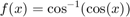
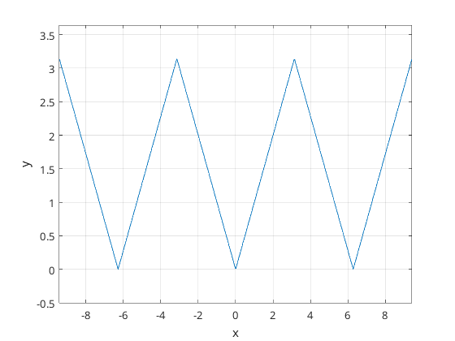
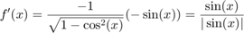
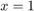
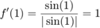
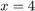
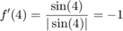
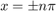
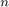
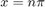

Plotta funktionen och se om det finns punkter som icke går att derivera

x = linspace(-10, 10, 1000); f = @(x) acos(cos(x)); figure; plot(x, f(x)); xlabel('x'); ylabel('y'); grid on; axis([(-3 * pi) (3 * pi), -0.5 (pi + 0.5)])
Man ser direkt att derivatan är konstant negativ eller positiv. Vi räknar derivatan

Om vi nu skulle sätta in 

eller 

f_prime = @(x) sin(x) / sqrt(1 - cos(x)^2); f_p1 = f_prime(1); f_p4 = f_prime(4); fprintf('f''(1) = %f\n', f_p1); fprintf('f''(4) = %f\n', f_p4);
f'(1) = 1.000000 f'(4) = -1.000000
Nu för icke-deriverbara punkter. Det skulle vara vid vändningspunkterna på grafen, vilket är vid  där  är ett heltal.
Vi testar
f_ppi = f_prime(pi); f_p2pi = f_prime(2 * pi); f_pn2pi = f_prime(-2 * pi); f_p10pi = f_prime(10 * pi); f_pn10pi = f_prime(-10 * pi); fprintf('f''(pi) = %f\n', f_ppi); fprintf('f''(2*pi) = %f\n', f_p2pi); fprintf('f''(-2*pi) = %f\n', f_pn2pi); fprintf('f''(10*pi) = %f\n', f_p10pi); fprintf('f''(-10*pi) = %f\n', f_pn10pi);
f'(pi) = Inf f'(2*pi) = -Inf f'(-2*pi) = Inf f'(10*pi) = -Inf f'(-10*pi) = Inf
Alltså är funktionen kontinuerlig vid alla punkter förutom vid  där n är ett heltal.